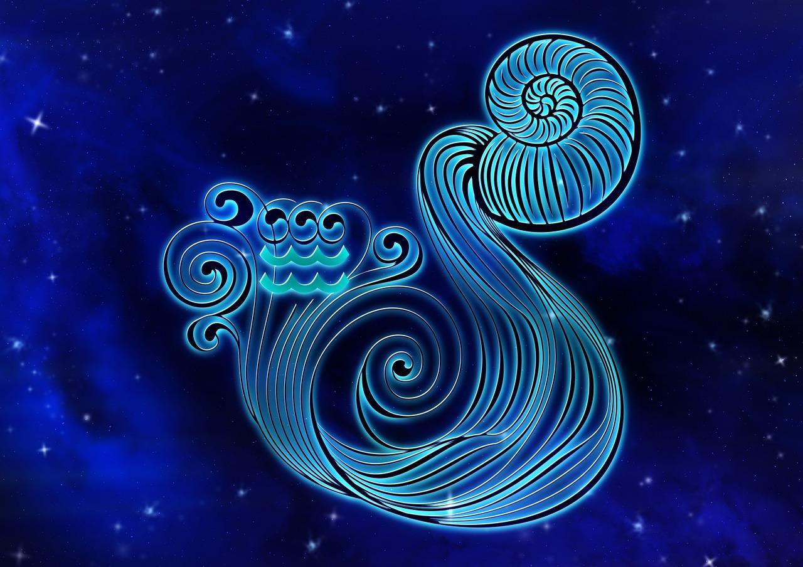

ВОДОЛІЙ
(21 січня - 18 лютого)


Водолії мають одну дуже класну якість – вміння пристосовуватися до будь-яких умов. Вони не пропадуть, а ще й на зло всім яскраво заявлять про себе.
Сповнений таємничості і незвичайності, Водолій, як і Риби, — це знак зодіаку, який завжди привертає до себе увагу. Люди, народжені під цим знаком, часто здивовані своїми оригінальними думками і нестандартним поглядом на світ. Характер водоліїв відрізняється своєю незалежністю та індивідуальністю, але також глибокою чуттєвістю і розумінням людського серця. Водолії — неймовірно багатогранні особистості, і їх глибини можуть збентежити тих, хто спробує їх зрозуміти. Водолій — це знак воздуху, і як і всі знаки цього елементу, він відзначається своєю розумовою активністю і постійним бажанням знань.
- Особливості: водолії мають глибоку соціальну свідомість.
- Символізм: людина, яка тримає в руках дві посудини: в одній – жива вода, в іншій – мертва.
- Вплив: водолії відкриті до нових ідей, вони постійно прагнуть розширити свої горизонти і відкрити для себе щось нове.
- Камені-талісмани: ключик,аметмст.
Водолії мають одну дуже класну якість – вміння пристосовуватися до будь-яких умов. Вони не пропадуть, а ще й на зло всім яскраво заявлять про себе.